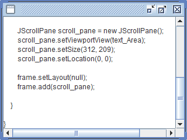

JScrollPane
捲動軸
底下示範為 JTextArea 添加捲動軸：
執行程式並貼上文字後：

其它設定
可用 scroll_pane.setHorizontalScrollBarPolicy() 設定垂直捲軸的顯示時機：
JScrollPane.HORIZONTAL_SCROLLBAR_ALWAYS （顯示）
JScrollPane.HORIZONTAL_SCROLLBAR_AS_NEEDED （自動）
JScrollPane.HORIZONTAL_SCROLLBAR_NEVER （隱藏）
可用 scroll_pane.setVerticalScrollBarPolicy() 設定水平捲軸的顯示時機：
JScrollPane.VERTICAL_SCROLLBAR_ALWAYS （顯示）
JScrollPane.VERTICAL_SCROLLBAR_AS_NEEDED （自動）
JScrollPane.VERTICAL_SCROLLBAR_NEVER （隱藏）
將元件做為 JScrollPane() 建構式參數的話，相當於 scroll_pane.setViewportView() 的功能，例如：JScrollPane scroll_pane = new JScrollPane(text_area)。